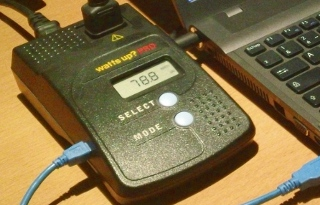
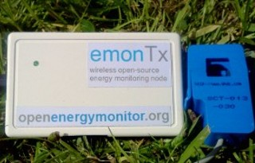
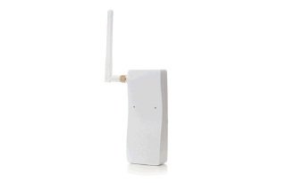
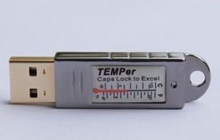
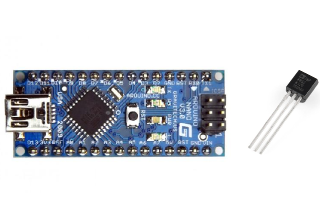
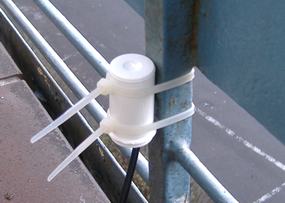

Power consumption
For the power consumption we are currently using the WattsUp! Pro meter. The solutions we have looked at include:
WattsUp! ProThe WattsUp! meter is produced by the company of the same name. The Pro version has a serial-over-usb connection that allows software to obtain the data from the meter. Advantages
|
Open Energy MonitorThe Open Energy Monitor uses a current transformer, a clamp to measure the electrical current flowing through the power cables going to the computer. Advantages
|
OWL Intuition-eOWL produces a home energy monitoring solution. Advantages
|
{kind=link}
Ambient temperature sensor
The ambient temperature sensor is used to get an idea of the room temperature. Temperature sensors are fairly low-cost sensor. However, the difficulty is to find one that is cheap, that plugs into a PC, and that works with Windows and Linux.
TEMPerAdvantages
|
Arduino + TMP36Arduino is the combination of a small development board with an Atmel microcontroller and an easy to use development environment. The TMP36 sensor is a cheap, analog temperature sensor. Advantages
|
USBTempUSBTemp measures the temperature using the DS18S20 sensor and an ATMega168 micro-controller (used also by the Arduino). It connects via USB to your computer. For details, see the following pages: gonium.net and mikrowerk. Advantages
|